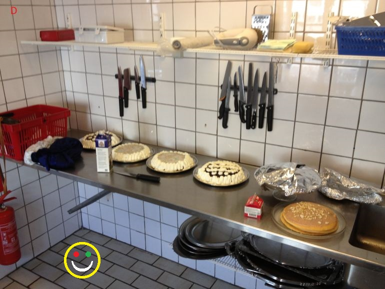

Roejle.dk og cookies

Roejle.dk anvender cookies til følgende formål:
- Teknisk funktionalitet, herunder tekststørrelse, så vi kan huske dine præferencer.
- Trafikmåling, så vi ved hvor mange der besøger vores site og hvor de kommer fra.
Ejeroplysninger:
Dette website udbydes af:
Røjlegården ved Liljan Wagner Smitt og Peter Plant
Torupvejen 98
3390 Hundested
Telefon: 26 30 66 57
Email: info@roejle.dk
Cookies
En cookie er en lille tekstfil, der lagres i din browser og for at kunne genkende din computer ved tilbagevendende besøg.
Der er ingen personlige oplysninger gemt i vores cookies, og de kan ikke indeholde virus.
Så lang tid opbevares cookies
Cookies sletter sig selv efter et vist antal måneder (kan variere), men de fornyes efter hvert besøg.
Sådan undgår du cookies
Hvis du ikke ønsker at modtage cookies, kan du slette eller blokere dem.
Se vejledning på http://minecookies.org/cookiehandtering.
Hvad bruges cookies til på roejle.dk?
Cookies anvendes til at føre statistik over antallet af brugere samt oplysninger om geografi.
- Google Analytics (trafikmåling)
Websitet bruger cookies fra Google Analytics til at måle trafikken på websitet.
Du kan fravælge cookies fra Google Analytics her: http://tools.google.com/dlpage/gaoptout
Teknologi
Roejle.dk er designet af:
Villy Ib Jørgensen
Nordstjernen 9
3390 Hundested
E-mail: villy.ib.jorgensen@gmail.com
Roejle.dk er implementeret med anvendelse af teknologien Responsive Design, således at websiderne kan læses med en pc, en tablet eller en smart telefon. Der anvedes JavaScript biblioteker fra Bootstrap, jQuery og Google Analytics